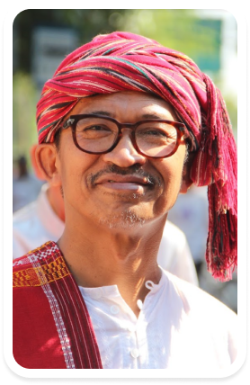
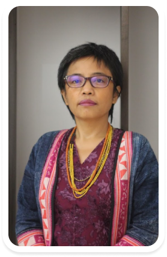

TRIBUN CORNER
AMAN dan Perjuangannya
Mengulas cerita-cerita seputar AMAN dan perjuangannya sejak awal sampai sekarang ini. Tentang komitmen AMAN dalam menggandeng Masyarakat Adat untuk terus memperjuangkan haknya. Memberikan ruang dialog bagi perempuan & pemuda adat dengan menceritakan aksi-aksi kolektifnya. Simak obrolan menarik dalam 3
PEMBICARA
Sandra Moniaga
Komnas HAM RI

Abdon Nababan
Ketua Dewan AMAN Nasional

Rukka Sombolinggi
Sekretaris Jenderal AMAN